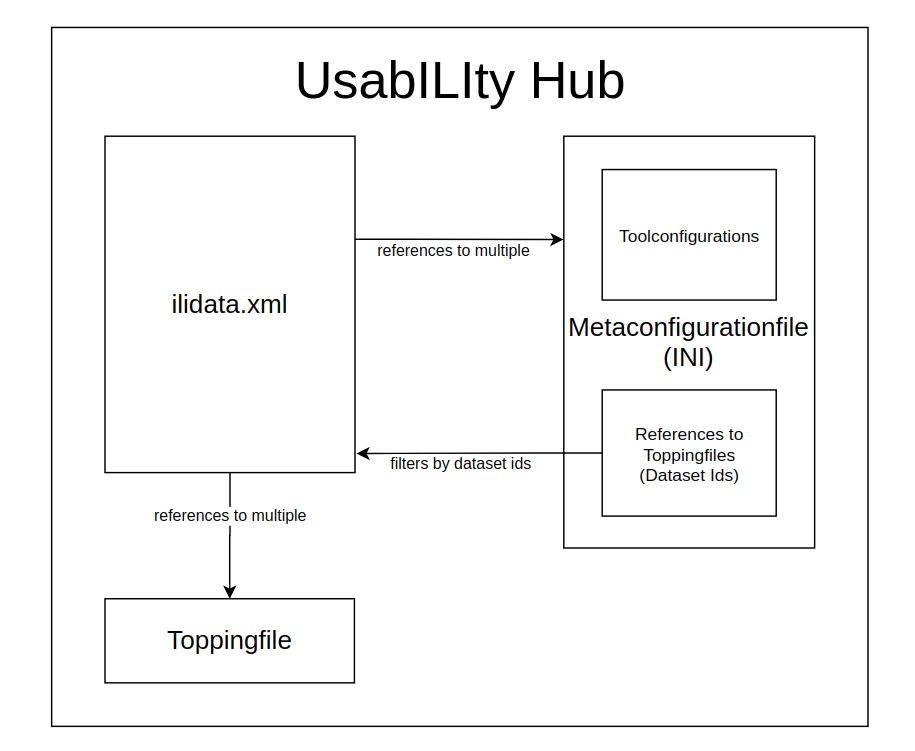

Informationen über die technische Konzeption des UsabILIty Hubs.
Abstract
Die Idee des UsabILIty Hub ist es, für Implementierte INTERLIS Modelle Zusatzinformationen automatisch übers Web zu empfangen. So wie wir jetzt Modelle durch die Anbindung der Datei ilimodels.xml von http://models.interlis.ch - und mit der Datei ilisite.xml die Modelle vieler anderen Repositories - erhalten können, können wir die Zusatzinformationen mit der Datei ilidata.xml auf dem UsabILIty Hub (derzeit https://models.opengis.ch) - und mit der Datei ilisite.xml die Modelle vieler anderen Repositories - erhalten.
Einstellungens für Tools werden in einer Metakonfigurationsfiles (INI-Datei) konfiguriert, ebenso wie Links (Ids oder Pfade) zu Toppingfiles, die Informationen zu GIS Projektes enthalten (wie zBs. Symbologien oder Legendensturkturen). Somit bestehen Zusatzinformationen meistens aus einer Metakonfiguration und beliebig vielen Toppings.

Das ilidata.xml
Ein ilidata.xml dient als Index für alle benötigten Zusatzinformationen. Das File basiert auf dem Modell DatasetIdx16.
Es enthält die Klasse bzw. die Elemente DatasetMetadata. Darin wird auf Files referenziert, die auf demselben Server/Repository liegen, wie das ilidata.xml.
Weitere Server/Repositories können über das ilisite.xml verbunden werden. Die DatasetMetadata werden anhand einer systemübergreifenden (repositorien-übergreifenden) DatasetMetadata-Id identifiziert. Es ist dem Benutzer überlassen, wie diese Id lautet.
Beispiel DatasetMetadata
<DatasetIdx16.DataIndex.DatasetMetadata TID="be6623c1-aa64-4a07-931e-fc4f0745f025">
<id>ch.opengis.ili.config.KbS_LV95_V1_4_config_V1_0</id>
<version>2021-01-06</version>
<owner>mailto:david@opengis.ch</owner>
<title>
<DatasetIdx16.MultilingualMText>
<LocalisedText>
<DatasetIdx16.LocalisedMText>
<Language>de</Language>
<Text>Einfaches Styling und Tree (OPENGIS.ch)</Text>
</DatasetIdx16.LocalisedMText>
</LocalisedText>
</DatasetIdx16.MultilingualMText>
</title>
<categories>
<DatasetIdx16.Code_>
<!-- dieser Eintrag betrifft das Modell KbS_LV95_V1_4 -->
<value>http://codes.interlis.ch/model/KbS_LV95_V1_4</value>
<!-- Konvention: http://codes.interlis.ch/model/{MODELNAME} -->
</DatasetIdx16.Code_>
<DatasetIdx16.Code_>
<!-- dieser Eintrag betrifft eine Metakonfigurationsdatei -->
<value>http://codes.interlis.ch/type/metaconfig</value>
<!-- fix Wert fuer Metaconfigs -->
</DatasetIdx16.Code_>
<DatasetIdx16.Code_>
<!-- Codes können auch generisch sein -->
<value>http://codes.opengis.ch/modelbaker</value>
<!-- müssen aber eine URL sein -->
</DatasetIdx16.Code_>
</categories>
<files>
<DatasetIdx16.DataFile>
<fileFormat>text/plain;version=2.3</fileFormat>
<file>
<DatasetIdx16.File>
<path>metaconfig/opengisch_KbS_LV95_V1_4.ini</path>
<!-- realtiver Pfad (zu ilidata.xml) der Metaconfig Datei -->
</DatasetIdx16.File>
</file>
</DatasetIdx16.DataFile>
</files>
</DatasetIdx16.DataIndex.DatasetMetadata>
Filterung
Das Element categories in den DatasetMetadata enthält eine Liste von Code_ Elementen. Diese können zu deren Filterung dienen. Im Zusammenhang mit dem UsabILIty Hub werden primär folgende zwei Kategorien verwenden.
Modell
Die Kategorie für das Modell wird mit dem Prefix http://codes.interlis.ch/model/ identifiziert und enthält den Modell-Namen.
<DatasetIdx16.Code_>
<value>http://codes.interlis.ch/model/KbS_LV95_V1_4</value>
</DatasetIdx16.Code_>
Type
Die Kategorie für den File-Typ wird mit dem Prefix http://codes.interlis.ch/type/ identifiziert und enthält den betreffenden Typen.
<DatasetIdx16.Code_>
<value>http://codes.interlis.ch/type/metaconfig</value>
</DatasetIdx16.Code_>
Im Zusammenhang mit der UsabILIty Hub Implementierung des QGIS Model Baker werden folgende Typen verwendet:
metaconfig, um zu beschreiben, dass es sich um ein Metakonfigurationsfile handelttoml, um zu beschreiben, dass es ein Metaattributfile ist, das in TOML geschrieben istsql, um zu beschreiben, dass es ein SQL Query File ist, das verwendet werden kann bei der Erstellung der Datenbanklayertree, um zu beschreiben, dass es sich um ein Toppingfile handelt, das die Legendendarstellung definiertqml, um zu beschreiben, dass es sich um ein Toppingfile handelt, das für einen QGIS Layer Styling und Formularkonfigurationen enthalten kannreferenceData, um zu beschreiben, dass es sich um ein Datenfile (zBs. ein Transferfile oder ein Katalog) handelt
Generic
Allerdings ist der Inhalt des Code_ Elements nicht definiert. Solange es sich um eine URL handelt, ist der Toolentwicklerin überlassen, wie sie es verwenden möchte.
Im moment verwendet der QGIS Model Baker keine generischen Kategorien
Das ilisite.xml
Das ilisite.xml basiert auf dem Modell IliSite09. Es enthält die Klasse SiteMetadata wo URLs zu anderen Repositories definiert sind, Diese Repositorien bewirtschaften wiederum ein ilimodel.xml oder - ebenso - ein ilidata.xml.
Somit können Modelle über mehrere Repositories gefunden werden und genauso auch Metakonfigurationsfiles und/oder Toppingfiles.
Beispiel eines IliSite09 elements
<IliSite09.SiteMetadata.Site TID="1">
<Name>usability.opengis.ch</Name>
<Title>Allgemeine metadaten für ili-modelle</Title>
<shortDescription>Weitere Sites des UsabILItyHubs</shortDescription>
<Owner>http://models.opengis.ch</Owner>
<technicalContact>mailto:david@opengis.ch</technicalContact>
<subsidiarySite>
<IliSite09.RepositoryLocation_>
<value>usabilitydave.signdav.ch</value>
</IliSite09.RepositoryLocation_>
</subsidiarySite>
</IliSite09.SiteMetadata.Site>
Das Metaconfigurationfile (INI)
Ein Metakonfigurationsfile ist eine INI-Datei, die Konfigurationen für ein oder mehrere Tools enthält. Ebenso kann im Metakonfigurationsfile auf Toppingfiles und andere zur Konfiguration gehörenden Files referenziert werden.
Filereferenzen
Die Files werden entweder anhand der systemübergreifenden DatasetMetadata-Id referenziert oder sie können einen statischen Filepfad enthalten.
DatasetMetadata-Id
Wenn ein File über eine DatasetMetadata-Id referenziert wird, heisst das, dass die ilidata.xml repositoryübergreifend geparst werden, um das verlinkte File zu finden. Das bedeuted, dass die Metakonfiguration nicht nur auf Files auf demselben Repository/Server referenzieren kann. Prefix für DatasetMetadata-Ids ist ilidata:
Es wird grunsätzlich Empfohlen, die DatasetMetadata-Id für eine Referenz auf ein File zu verwenden (anstelle vom statischen Filepfad).
Filepfad
Statische Filepfad-Links die mit file: referenziert werden, können sowohl absolut sein, als auch relativ. Es kann aber vom verwendeten Tool abhängig sein, zu was der Pfad relativ ist. Deshalb sollte das nur zu Testzwecken verwendet werden.
Der QGIS Model Baker behandelt relative Pfade relativ zu sich selbst. ili2db hingegen relativ zum Verzeichnis wo ili2db gestartet wird.
[CONFIGURATION]
baseConfig=ilidata:remoteBaseConfigBasketId;ilidata:otherRemoteBaseConfigBasketId;path/otherBaseConfigLocalFile
org.interlis2.validator.config=ilidata:ilivalidatorConfigBasketId
qgis.modelbaker.layertree=ilidata:ch.opengis.config.KbS_LV95_V1_4_layertree
ch.interlis.referenceData=ilidata:ch.opengis.config.KbS_Codetexte_V1_4
[ch.ehi.ili2db]
defaultSrsCode = 2056
smart2Inheritance = true
strokeArcs = false
importTid = true
createTidCol = false
models = KbS_Basis_V1_4
preScript=ilidata:ch.opengis.config.KbS_LV95_V1_4_prescript
iliMetaAttrs=ilidata:ch.opengis.config.KbS_LV95_V1_4_toml
[qgis.modelbaker.ch]
"Belasteter_Standort (Geo_Lage_Polygon)"=file:toppings_in_modelbakerdir/qml/opengisch_KbS_LV95_V1_4_001_belasteterstandort_polygon.qml
"Belasteter_Standort (Geo_Lage_Punkt)"=ilidata:ch.opengis.topping.opengisch_KbS_LV95_V1_4_001
ZustaendigkeitKataster=ilidata:ch.opengis.configs.KbS_LV95_V1_4_0032
Beispielsweise die Id ch.opengis.configs.KbS_LV95_V1_4_layertree referenziert auf ein DatasetMetadata, das ein Link auf eine YAML-Datei enthält, wo die Legenden-Struktur definiert ist. Die Id ch.opengis.configs.KbS_LV95_V1_4_001 zeigt auf DatasetMetadata Element, das einen Link auf ein QML File für QGIS Style und Formularkonfigurationen enthält.
Es können auch ganze Sections definiert werden. Die Section qgis.modelbaker.qml enthält neben der Verlinkung auch die Zuweisung von Layername zu QML-Files.
Tool Prefix
Im Metakonfigurationsfile können Einträge mit einem Tool-Prefix markiert werden. ili2db zum Beispiel verwendet den Prefix ch.ehi.ili2db und QGIS Model Baker den Prefix qgis.modelbaker. Allerdings ist dem Tool überlassen, welche Konfigurationen es verwendet. Den Prefix ch.interlis, der mit ch.interlis.referenceData zum Beispiel für die Referenz auf Datenfiles wie Kataloge oder Transferdatenfiles verwendet wird, verwenden zBs. ili2db wie auch QGIS Model Baker.
Referenzen auf andere Metakonfigurationsfiles
Es ist konzeptionell auch möglich (wenn auch von Tools wie QGIS Model Baker noch nicht umgesetzt), dass man von einen Metakonfigurationsfile mittels dem Eintrag baseConfig auf andere Metakonfigurationsfiles linken kann. Somit würde eine Art “Vererbung” der Konfiguration möglich sein.
Toppingfiles
Toppingfiles sind Files, auf welche von der Metakonfiguration referenziert wurde und die Konfigurationsinformation des GIS Projektes enthalten. Es können also Formularkonfigurationen, Style-Attribute, Legendendarstellung und Reihenfolge, sowie auch Kataloge, Transferfiles und andere Datenfiles sein. Für jedes Tool können individuelle Toppingfiles verwendet werden. Von einem einfachen Zip-File, welches das gesamte Projekt enthält, bis zu einem sorgfältigen Mapping von Layernamen zu QML-Style-Files.
Beispiel eines YAML Files für die Layerstruktur in QGIS
legend:
- 'top-group':
group: true
checked: true
expanded: true
mutually-exclusive: true
mutually-exclusive-child: -1
child-nodes:
- 'geom punkt':
group: false
checked: true
- 'geom polygon':
group: false
checked: true
- 'subgroup':
group: true
child-nodes:
- 'subsubgroup':
group: true
checked: true
child-nodes:
- 'baum':
group: false
checked: true
- 'subsubsubgroup':
group: true
checked: true
child-nodes:
- 'another layer':
group: false
visbile: false
- 'layer in the subgroup':
group: false
visbile: false
layer-order:
- 'geom punkt'
- 'geom polygon'